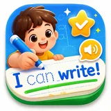

Travel Plans
Your map and your day, together.
Unfold to see the map beside your day’s itinerary. Fold back to keep your plans in a compact, scrollable view.
Explore Travel PlansFor the places you go. The things you make. And the little rituals in between.
Made for iPhone & iPadMade for iPhone Duo
Explore what changes when you unfold. Switch between the inner and outer displays in three apps available now.
Travel Plans
Unfold to see the map beside your day’s itinerary. Fold back to keep your plans in a compact, scrollable view.
Explore Travel PlansMy World
Open Travel Studio in My World+ to explore your atlas and travel ideas side by side. Fold back to a compact view and keep exploring.
Explore My WorldSentences
Unfold for a wider writing board. Fold back to the smaller screen and pick up with the same sentence and handwriting.
Explore SentencesInteractive Light Table
Six live apps and three in preparation. Compare real screens, key features and plain-English purchase terms.
The everyday collection
Six independent apps.
A little help with the things you love.
Available on App Store
Every journey, part of your story.
Free core · Optional My World+
Available on App Store
Plan one trip free. Unlock full access once.
Free to start · £3.99 one-time full unlock

LearningAvailable on App Store
Their next sentence starts here.
Free starter · One-time Premium
Available on App Store
Make your next shot a better one.
Essentials stay free · Optional Better Coffee Pro
Available on App Store
Walk up to the shot with a plan.
Free core · One-time Pro
Available on App Store
Something good to look forward to.
Free starter · One-time Plus
Independent by choice
Let’s Build Apps HQ is an independent maker of Apple apps for real life. Each starts with one everyday need, from remembering a journey to finding a better coffee recipe.
Useful things, made with care. Clear choices about purchases and privacy, explained app by app.
Our approach to privacyIn the works
Three more apps in private testing and release preparation.
Catch the little things as Memory Drops, bring artwork to life and make family memories worth returning to.
Keep the next care need visible in one private local iPhone log.
Bring the wedding plan and a private Planning Circle into one Wedding HQ.
Six apps available now on the App Store.
Follow the build